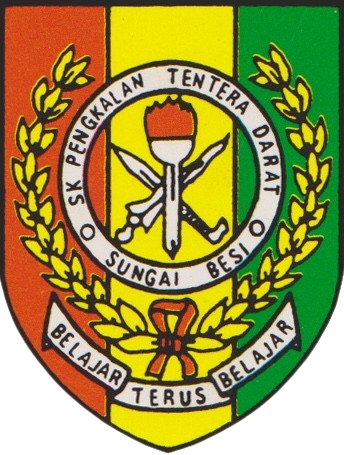
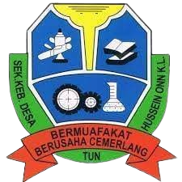
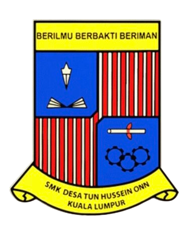
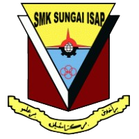
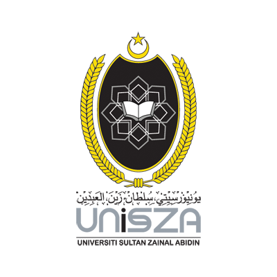

Education ˏˋ°•*⁀➷
My Education
1. SEKOLAH KEBANGSAAN PENGKALAN TENTERA DARAT,KL

SKPTD
- I pursued my primary education at this school from 2008 until 2009 only and then I moved to another school.
- This school is located in Kem Sungai Besi, Kuala Lumpur.
2. SEKOLAH KEBANGSAAN DESA TUN HUSSEIN ONN,KL

SKDTHO
- After that, I studied at this school from 2010 to 2013. I took UPSR (Ujian Penilaian Sekolah Rendah) in this school.
- This school is located in Kem Desa Tun Hussein Onn, Kuala Lumpur.
3. SEKOLAH MENENGAH KEBANGSAAN DESA TUN HUSSEIN ONN,KL

SMKDTHO
- I started my first high school journey at this school from 2014 until 2017. I took PT3 (Penilaian Tingkatan 3) in this school and I moved again to another school for my senior year.
- This school is my hardest good bye. I made many memories with my friends there for 4 years.
- This school also located in Kem Desa Tun Hussein Onn, Kuala Lumpur.
4. SEKOLAH MENENGAH KEBANGSAAN SUNGAI ISAP,KUANTAN

SEMSIS
- After that, I started my last secondary school journey at this school in 2018. I took SPM (Sijil Pelajaran Malaysia) in this school.
- I transferred to this school because my dad has retired from army. I also an accounting student here.
- I enjoyed study at this school because I can made new friends who have been very nice to me.
- This school is located at Permatang Badak, Kuantan.
5. UNIVERSITI SULTAN ZAINAL ABIDIN,TERENGGANU

UniSZA
- Then, after I sat for my SPM examination in 2018, I pursued my study to Diploma level in Universiti Sultan Zainal Abidin in Diploma in Insurance in year 2019 until 2021.
- I'm glad I get to experience new friends from another state such as Kedah and Perlis and adapt with university environments to improve myself better.
6. UNIVERSITI TEKNOLOGI MARA CAWANGAN KELANTAN, KAMPUS KOTA BHARU
UiTM KB
- In 2022, after I graduated from UniSZA, i decided to further my study in Bachelor Degree level in Universiti Teknologi Mara. Then, I got accepted into UiTM Kelantan in Bachelor in Business Administration (Hons) Finance.
- I really enjoying my degree here with my friends and I'm expanding my social circle and keeping my motivation levels up. I believe that I am becoming a better version of myself soon.